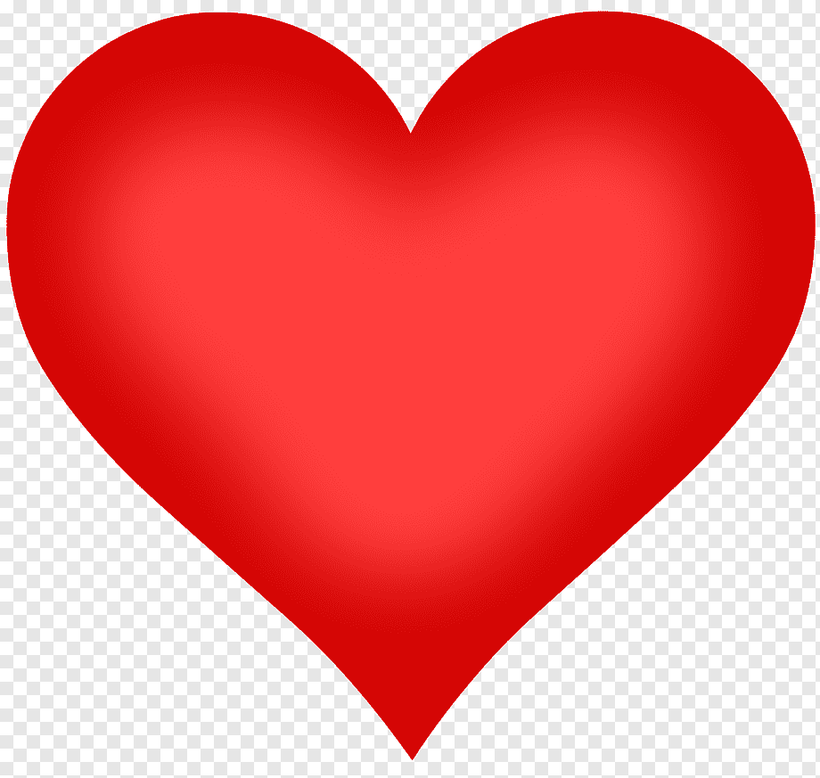

Se você chegou até aqui, na nossa aba de doações, mantenha o coração quentinho e considere contribuir com a nossa causa! Cada valor arrecadado será cuidadosamente convertido em itens essenciais como perucas de lã, próteses e outras necessidades dos pacientes, além de ajudar nos custeios da nossa organização. Todo o processo será conduzido com a máxima transparência: publicaremos regularmente em nossa página do Facebook a prestação de contas e os detalhes dos gastos. Sua doação, seja qual for o valor, ajuda a transformar vidas e a levar conforto e dignidade a quem mais precisa. Faça parte desse movimento solidário e traga um pouco de luz e amor para o caminho de alguém! Clique no coração para ir para a página de contato!
